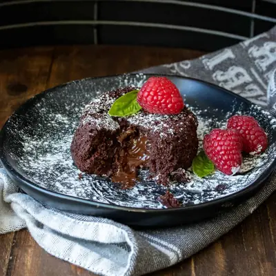

Easy Vegan Chocolate Lava Cake (Rich & Gooey!)

Ingredients
- 6 tablespoons cocoa powder (, plus extra for dusting)
- ½ cup dairy free chocolate chips
- ½ teaspoon baking powder
- 1/8 teaspoon sea salt
- ¼ cup maple syrup
- 1 tablespoon almond butter
- 1 tablespoon tomato paste
- 6 tablespoons cashew milk (, or other plant based milk)
- 1 teaspoon vanilla extract
- 2 teaspoons dairy free chocolate chips
Steps
- Preheat oven to 425 degrees F / 220 C
- Mix cocoa powder, chocolate chips, baking powder and salt in a bowl breaking up clumps.
- Add in the rest of the ingredients and mix well.
- Prep your ramekins with a spray of oil, rub around to coat. Then dust each with a little cocoa powder.
- Split the batter into the ramekins.
- If you want an extra gooey center, add 1 teaspoon of chocolate chips in the middle of each ramekin and push down to cover them with batter.
- Bake for 15 minutes. Allow to cool a bit, but enjoy warm.
Recipe by Anjali Shah, from The Picky Eater. Saved here for personal use; the original has the full notes, tips and photos. Open original